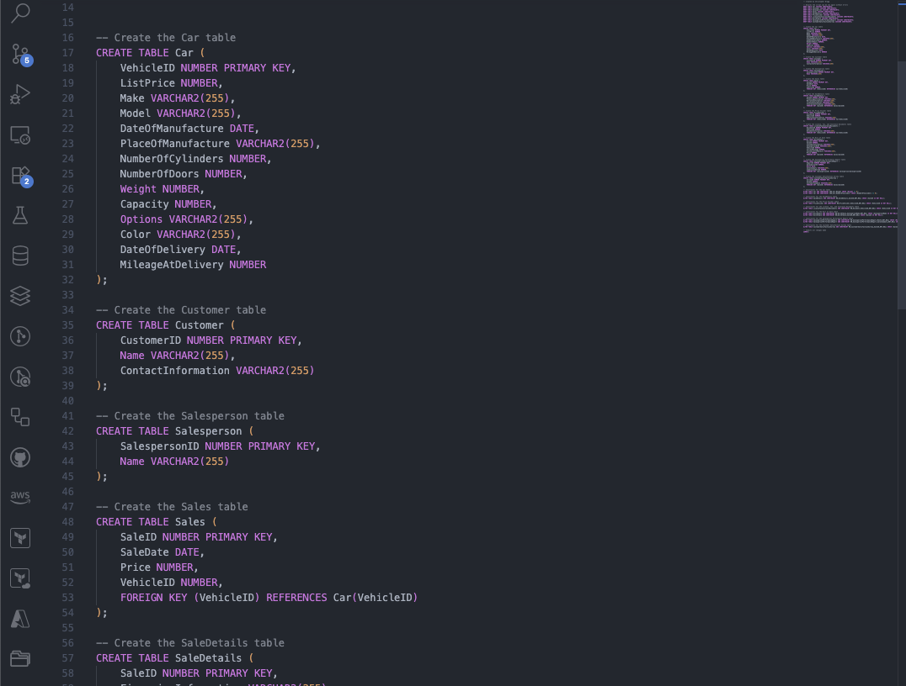
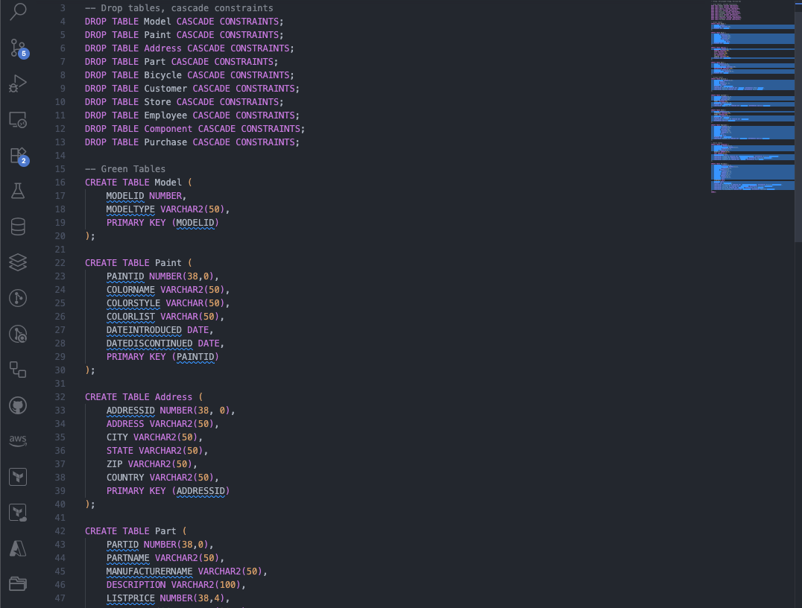
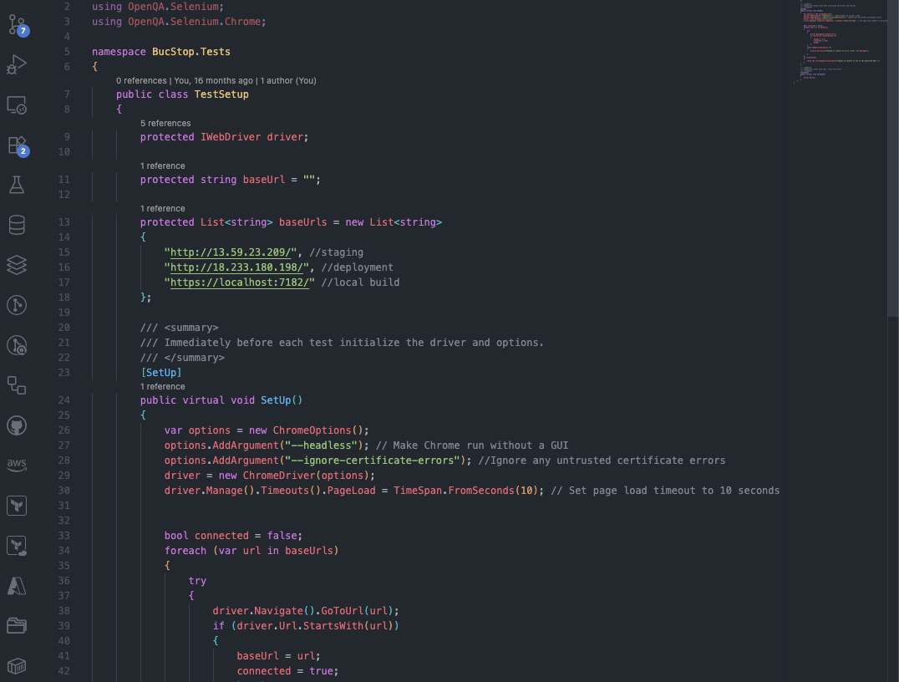

RDB design & implementation

Developed a fully normalized 3NF relational database for a fictional car dealership, from ERD design to deployment. Created tables,
relationships, and constraints to ensure data integrity. Included operational logic for inventory tracking, sales transactions,
and staff performance metrics.
Key Tools & Technologies: Oracle SQL, ERD (Crow's Foot), 3NF Schema, DDL/DML Scripting, Lucidchart, Pythia Server
Data warehousing design & implementation

Designed and implemented a snowflake schema data warehouse for a bike shop dataset to support multi-dimensional analysis. Developed ETL-style scripts to extract,
transform, and load data from operational systems into analytical tables. Built complex queries using GROUP BY, ROLLUP,
and CUBE for deep insights into sales trends, seasonal performance, and product profitability.
Key Tools & Technologies: Oracle SQL, Snowflake Schema, OLAP Queries, ETL Scripting, Data Modeling, Pythia Server

Served as DevOps Engineer for a 7-member Scrum team developing a virtual arcade web application. Led the creation of the team's first fully automated
CI/CD pipeline using AWS, Docker, and GitHub Actions, significantly improving deployment speed and reliability. Designed and implemented Selenium
WebDriver and NUnit automated test suites, strengthening QA processes and ensuring long-term application stability.
Key Tools & Technologies: C#, .NET, HTML, JavaScript, CSS, Microservices, Selenium WebDriver, NUnit, AWS, Docker, GitHub Actions, GitHub, Jira, Agile, Scrum.

Contributed to backend logic, API integration, and feature development for a real-time scavenger hunt platform in a 9-member Scrum team.
Improved performance, added security features, and supported peer code reviews.
Key Tools & Technologies: C#, .NET, JavaScript, CSS, HTML, API Integration, GitHub, Jira, Agile, Scrum.

Built a Tkinter-based calculator with advanced math functions and JSON variable storage for session persistence.
Designed an intuitive interface and implemented undo/redo functionality using stacks.
Key Tools & Technologies: Python, Tkinter, JSON File I/O, OOP, Data Structures (Stacks), GitHub, Git.
Created a supermarket simulation with both an automated terminal version and an interactive Tkinter GUI.
Features real-time animated queues, modular architecture, and OOP-based design.
Key Tools & Technologies: Python, Tkinter, OOP, Data Structures (Queues), GUI Animation, GitHub, Git.

My work spans software QA, DevOps, and development, with a growing interest in data engineering. I bring technical expertise
and a proven ability to help engineering teams deliver impactful solutions, while maintaining a strong interest in emerging
technologies such as artificial intelligence and machine learning.